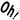
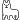
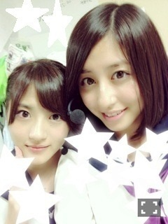
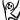

| 2013/08 30 Fri | 今日はTokyo！！！(´> ∀<｀)ゝ |
ちはるーむへようこそ(o^^o)
Happy Birthday♡さゆりん
すてきな21歳にしてね( ´ ▽ ` )ﾉ
もう13歳じゃだめよ！！笑
Zepp Namba
 Zepp Nagoya
Zepp Nagoya
Zepp Nagoya
ほんっとにすごく楽しかったです！
来てくれた方々ありがとう♪
舞台から見えるサイリウムはすごくきれいで
なんか嬉しくて感極まったなあ(o^^o)
そして名古屋の夜では
いくちゃん、らりん、さゆにゃんとコントをしたよ
いくちゃんが姉さんで、その子分?的な謎キャラ演じました。笑
途中していた宗教的踊りはキックボクシングの試合の前にする踊りらしいですよ皆さん。笑
＼らりにゃん／
コールも素敵で袖から思わずいくちゃんと笑っちゃってたよ


笑
今日はZepp Tokyoでツアー最後のライブ！！
いままで学んで来たことを
全部出し切って、
来てくれるお客さんに最高の舞台を見せられるように、
そして一緒に楽しんでいただけるように頑張ります！！！
(●´-` ●)(●´-` ●)(●´-` ●)(●´-` ●)
集計結果！！
1位 若月
2位 愛未
3位 みなみ
4位 ひめたん
さゆりん
あすか
ろってぃ
と、わかるようにダントツで若月！
とゆことで
結果は
こちらっ

正解っっ若月( ´ ▽ ` )ﾉ
若月から、
「ちーちゃんのブログにいつ私でるか楽しみにしてるんだよー♪」
って言ってくれてね！！！
嬉しかったからね！！！
すぐ載せちゃったよ！！(o^^o)
今回はこちらっ
わかるー？？？
(●´-` ●)(●´-` ●)(●´-` ●)(●´-` ●)
昨日はずーさんの部屋に愛未と川後とお泊まり( ´ ▽ ` )ﾉ
ずーの足は前よりは良くなったらしく
大丈夫大丈夫！
といつもの通りでほんと安心
みんなで楽しく今日の確認をして
最高のライブにしようと意気込んでる！！！
ふぅっっっ！！！
テルマエ・ロマエが浸透してきてる...笑
川後がびっくりしてたよ

よしっ！
今日楽しみにしててね\( ˆoˆ )/
ばいるんっ
るんるんっ
ちはるんっ
(´>∀<｀)ゝ
コメント(247)
2013/08/30 10:06